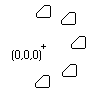

|
ArrayPolar Method |
Creates a polar array of objects given a NumberOfObjects, AngleToFill, and CenterPoint.
Signature
RetVal = object.ArrayPolar (NumberOfObjects, AngleToFill, CenterPoint)
Object
All Drawing Objects
The object this method applies to.
NumberOfObjects
Integer; input-only
The number of objects to be created in the polar array. This must be a positive integer greater than 1.
AngleToFill
Double; input-only
The angle to fill in radians. A positive value specifies counterclockwise rotation. A negative value specifies clockwise rotation. An error is returned for an angle that equals 0.
CenterPoint
Variant (three-element array of doubles); input-only
The 3D WCS coordinates specifying the center point for the polar array.
RetVal
Variant Array (array of objects)
The array of new objects.
Remarks
AutoCAD determines the distance from the array's center point to a reference point on the last object selected. The reference point used depends on the type of object previously selected. AutoCAD uses the center point of a circle or arc, the insertion point of a block or shape, the start point of text, and one endpoint of a line or trace.
Note that this method does not support the Rotate While Copying option of the AutoCAD ARRAY command.

Polar array with NumberOfObjects = 5, AngleToFill = 180, CenterPoint = 0,0,0.
NOTE You cannot execute this method while simultaneously iterating through a collection. An iteration will open the work space for a read-only operation, while this method attempts to perform a read-write operation. Complete any iteration before you call this method.
AttributeReference: You should not attempt to use this method on AttributeReference objects. AttributeReference objects inherit this method because they are one of the drawing objects, however, it is not feasible to perform this operation on an attribute reference.
| Comments? |